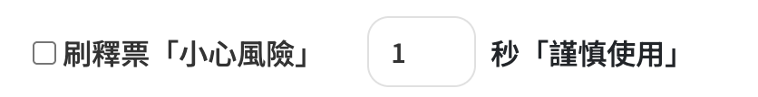

會員專屬｜操作指南
以下為您提供的 V3 及 KKTIX 插件的詳細使用說明。請務必仔細閱讀。
V2 操作教學 (tixCraft)
V3 最新版操作教學 (tixCraft)
-
開啟輔助功能
請確保 開啟輔助功能 已勾選。若未勾選，將不會自動從 `/detail` 頁面跳轉至購票頁 `/game`。 -
設定自動啟動時間
設定自動啟動的時間點，並記得儲存。
例如：若售票時間為 上午 11:00:00，請直接設置為 上午 11:00 即可。
系統將在剩餘約 5 秒時自動重新整理，直至開賣並自動跳轉到選座位頁。
-
選擇日期或場次名稱（三場以上時使用）

此功能用於演唱會有三場以上節目時，您可選擇以「日期」或「場次名稱」為條件，直接鎖定想要的場次購票。
例如有三場以上，想要直接鎖定您想要的日期購票，日期輸入：
2025/09/27 (六) 12:00即可。 -
快速選擇場次（兩場內時使用）
若只有兩場節目或以下，請直接選用「上到下」或「下到上」即可，系統將自動定位並選取未售罄的場次。
-
選擇選位模式
選擇以「電腦選位（只求有票）」或「自定義選位（精準鎖定）」。
特別注意：若您開啟「自定義選位」，輔助插件將優先選擇您所設定的精準區域。 -
自定義選位輸入格式
-
A. 鎖定票價：
若您要選假設4300票價。請在精準選位輸入：
4300（記得多加一個空白鍵） -
B. 鎖定區域（模糊）：
若您要4300裡面的「特B區」。請在普通選位輸入：
特B區（不用多一個空白鍵） -
C. 鎖定區域+票價（完整）：
若您是要一模一樣完整的「特B區4300」。請在普通選位輸入：
特B區4300（最前面以及最後面都不用空白鍵）
-
A. 鎖定票價：
-
設定所需張數
選擇自己所需的「票券張數」
提醒：請務必注意售票系統的購票上限，不要超過上限喔！
-
會員驗證問題答案

事先輸入售票系統的驗證問題（如：卡友號碼 / 會員優先購號碼）
-
猜驗證碼 / 自動送出
可自行判斷是否需要使用「猜驗證碼」、「自動送出」功能！
特別注意：（建議手動輸入驗證碼，限非台灣使用） -
刷釋出票設定
 可自行判斷是否需要使用「刷釋出票」功能！
建議：（建議設 2-5 秒區間，比較不會顯示 403 error）
KKTIX 插件操作教學
特別說明：「鎖定票價 / 區域」

-
若您想要隨機選票價：
請不用輸入任何東西，只要輸入你要的張數即可。
-
若您要選假設 $1200 票價：
請在「鎖定想要的票價 / 區域 / 座位（擇一即可）」輸入：
TWD$1,200 優先順序: 1 -
若您要選 $1200 票價裡面的「VIP單日票10/25」：
請直接輸入：
VIP單日票10/25 優先順序: 1 -
若您要選 $1200 票價裡面的 VIP單日票10/25 裡面的「10/25 3F VIP」：
請直接輸入：
10/25 3F VIP 優先順序: 1 -
若您要選「圖片上這三個票價都要」：
請分別設定優先順序：
TWD$800 優先順序: 1
10/24 3F VIP 優先順序: 2
10/25 3F VIP 優先順序: 3